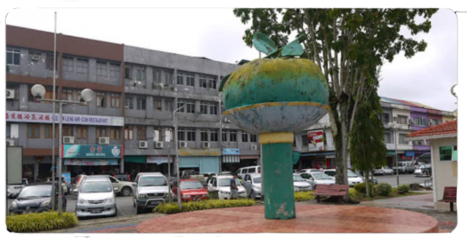

Subscribe Now!
Subscribe us for latest updates

|
HOME FOOD DRESS WEAR |
|  |
Ethics is knowing the difference between what you have a right to do and what is right to do
Bintangor (formerly known as Binatang) is a town, and the capital of the Meradong District in Sarikei Division, of Sarawak, Malaysia. Situated along the Rejang River, Bintangor was an express boat services hub connecting between, Sarikei and Sibu town in the 1970s up to the early 1990s. As road connections between these towns became a more prominent mode of transport, the waterway of the town died down.The town is widely known for its gastronomy, including the "Limau Bintangor" or Bintangor lime, "Bintangor Kampua" and Rojak Bintangor, a dish of fruit and vegetable dish mixed together by special sauce dressing. The nearest city from the town is Sibu, 45 minutes drive via the Pan Borneo Highway.
Meradong District was initially named as Binatang district and the town as Binatang town. In Malay language, Binatang literally translated as "animal". It was said that this area was once a fertile land with various wild fruits; attracting animals to gather here and search for food. Therefore, the early settlers named it Binatang. However, the local people later felt that the name was indecent and it was changed to Bintang (meaning "stars" in Malay). After a few years, the local authorities decided that the place name should not be changed so easily; and they reverted the name back to Binatang. Finally, in 1984, after a discussion with district council members, Sarawak chief minister Abdul Taib Mahmud decided to change "Binatang" district into "Meradong" district and the town name to "Bintangor". The name Meradong is derived from the river of the same name, which passes through the town before merging into the larger Rajang River. The name Bintangor is derived from the name of a tree which is found on the hills. The Calanolide A compound extracted from the Bintangor tree (Calophyllum lanigerum) is believed to be a vital component to treat HIV infection.
Subscribe us for latest updates
© 2020 by Ling Siew Siew